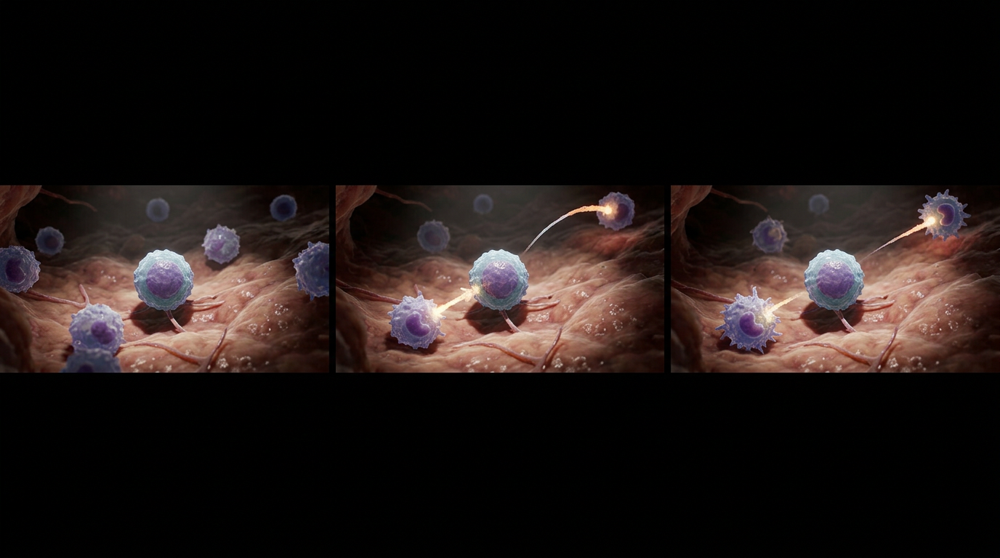
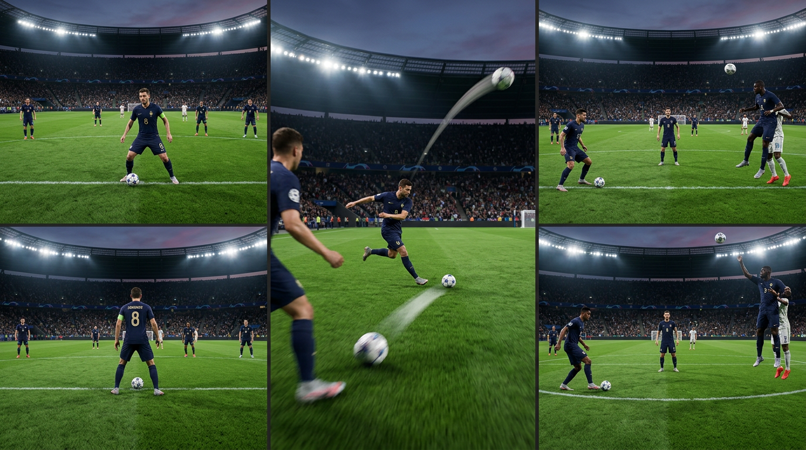
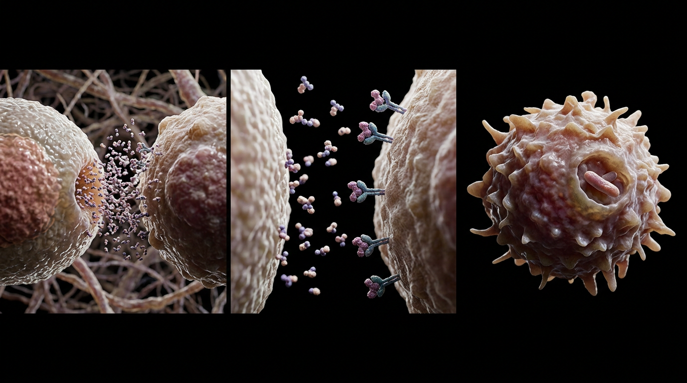
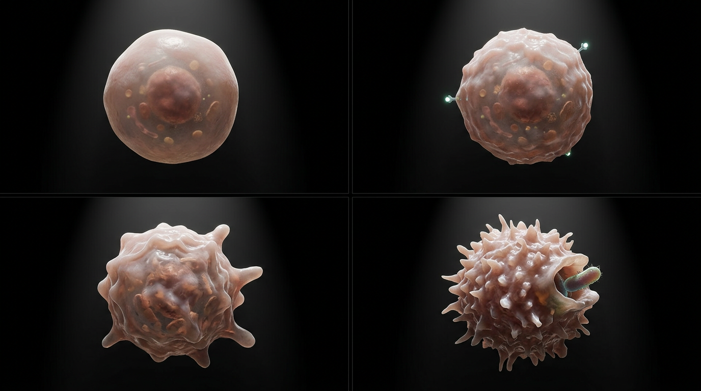
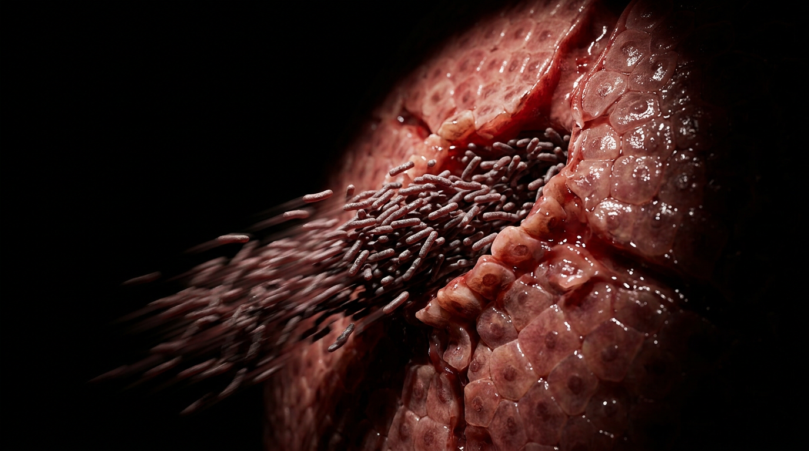

A CD4 T-cell does the same job on the immune system's field that a regista does on a football pitch. The regista is the deep-lying playmaker who sits centrally, reads the whole game before anyone else, and directs tempo through precise distribution: a short sharp pass to a teammate nearby, a long arcing ball to a teammate far across the field. A CD4 T-cell reads the threat the same way, then dispatches interferon-gamma, precisely and not indiscriminately, to activate macrophages at close range and at a distance, turning them from passive cells into active, pathogen-destroying ones.
A patient with a CD4 count of 45 presents with fever, weight loss, and hepatosplenomegaly. Below a CD4 count of roughly 50, the pass stops happening: there are not enough registas left on the pitch to direct play. Without interferon-gamma, macrophages cannot be activated to contain Mycobacterium avium complex, an organism that is otherwise harmless with an intact immune system. MAC disseminates hematogenously into the liver, spleen, and bone marrow instead, producing exactly this picture.


A regista does not distribute the ball the instant it arrives. He sits deep, composed, and reads the whole pitch first: where his teammates are, where the space is, which pass actually changes the tempo of the game. A CD4 T-cell does the same thing inside a tissue field. It positions itself centrally, surrounded at varying distances by macrophages that are, for the moment, doing nothing in particular. The stillness is not passivity. It is the read before the release, the same deliberate pause that separates a playmaker from a player who just kicks the ball forward.
When the CD4 T-cell acts, it does not flood the field with a generic signal. It releases interferon-gamma with real precision: a short, tight delivery to a macrophage close by, and a long, purposeful delivery to one much farther away, both aimed rather than broadcast. The interferon-gamma travels the extracellular space and docks into receptor sites on each macrophage's membrane. This is the molecular version of a regista splitting the defense with a short pass and finding a runner in behind with a long ball, in the same motion, from the same central source.

Before the signal arrives, a macrophage is a smooth, rounded, unremarkable cell drifting on its own. The moment interferon-gamma touches its surface, that changes. Its membrane begins to ruffle, its cytoplasm densifies, its whole form tightens into something purposeful. What was a docile cell becomes an aggressive one, dense and jagged, actively engulfing whatever pathogen crosses its path. This is not a new cell. It is the same macrophage, given direction it did not have a moment earlier, the same way a striker's run only means something once the ball is actually played into it.

Mycobacterium avium complex is not a dangerous organism on its own. Any intact immune system contains it without incident, the same way a defense contains an attack when someone is actually marking the space. Below a CD4 count of roughly 50, the registas are gone. There is no interferon-gamma, no macrophage activation, no containment. MAC breaches vessel walls unopposed and disseminates hematogenously into the liver, spleen, and bone marrow, tissues rich in the reticuloendothelial cells it can now colonize freely. The organism has not changed. The opposition has simply left the field.

The clinical picture reads directly off the mechanism: fever, weight loss, and hepatosplenomegaly, with an elevated alkaline phosphatase from hepatic infiltration. This runs on the same threshold logic as PCP and toxoplasmosis prophylaxis, TMP-SMX starting at a CD4 count of 100 to 200. It is just a different number and a different drug. MAC prophylaxis is azithromycin, starting below a CD4 count of 50. This patient crossed that threshold without ever starting it.
A CD4 count is not just a lab value. It is a headcount of how many registas are still on the pitch. Below 50 of them, nobody is left to call the play, and organisms that were never dangerous on their own get to run the game unopposed.
You're set. We'll send the full write-up to your inbox shortly.